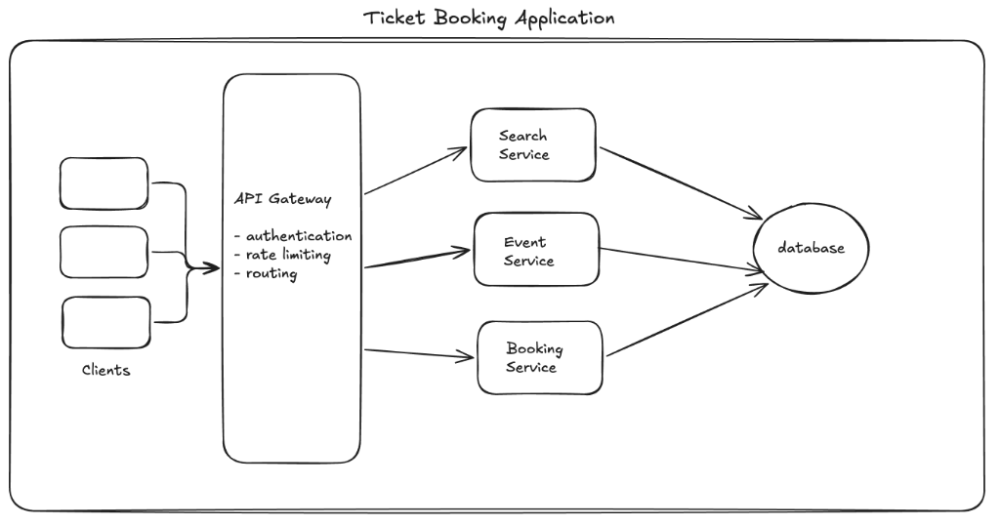
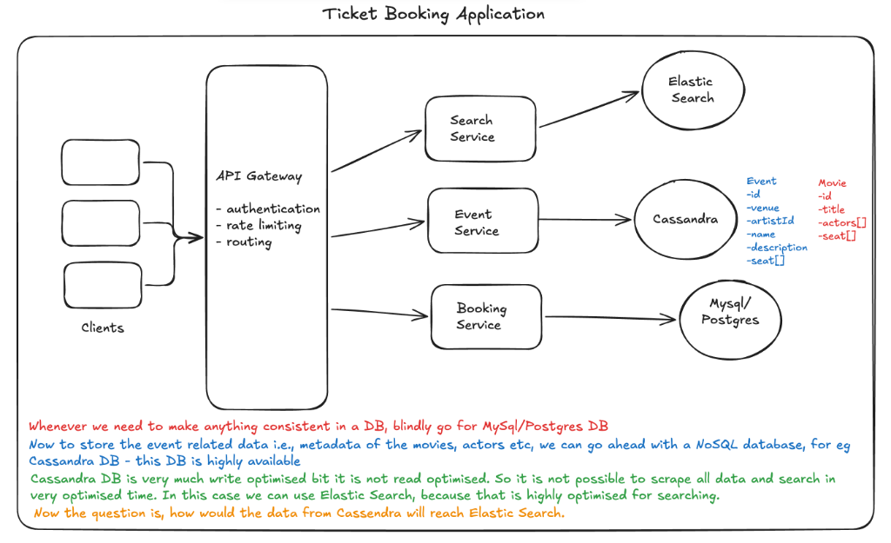
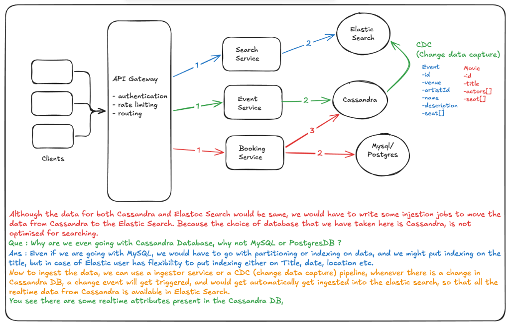
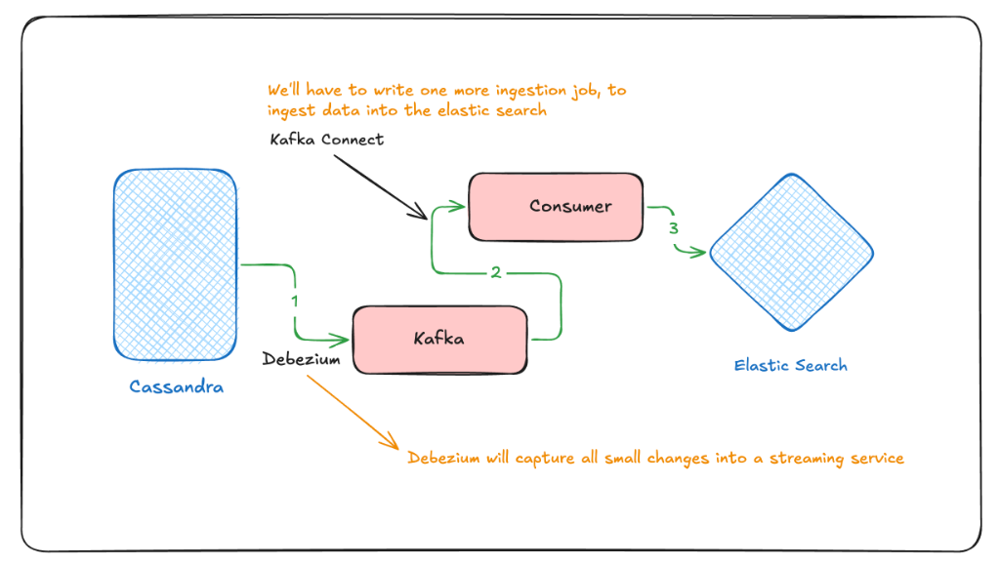
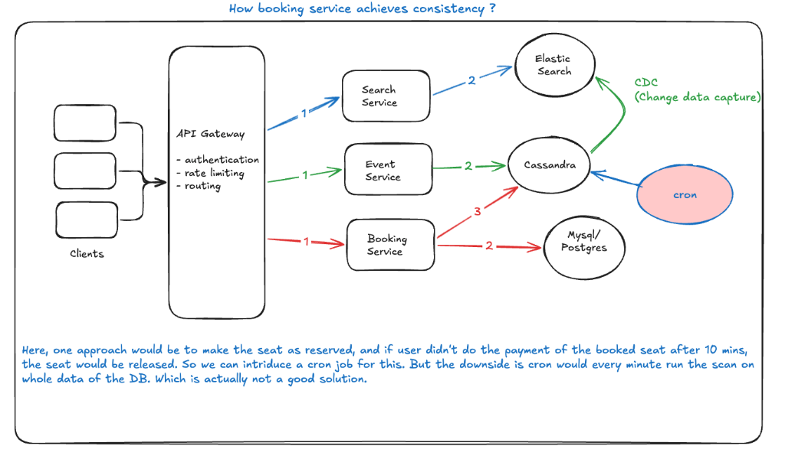
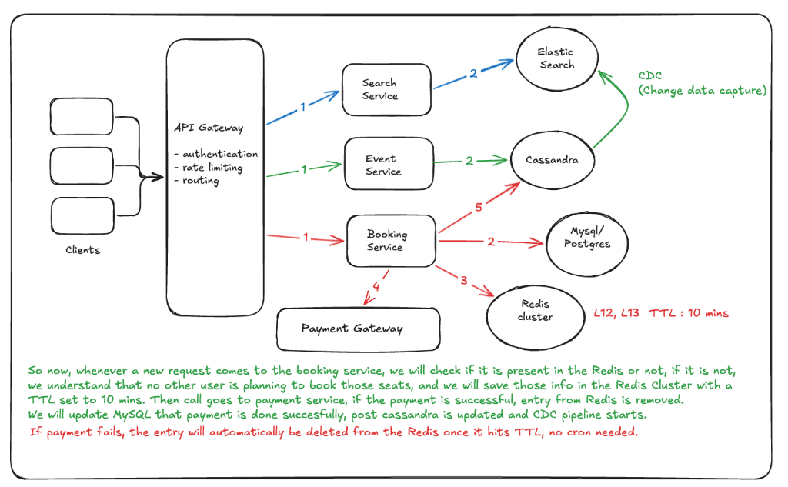
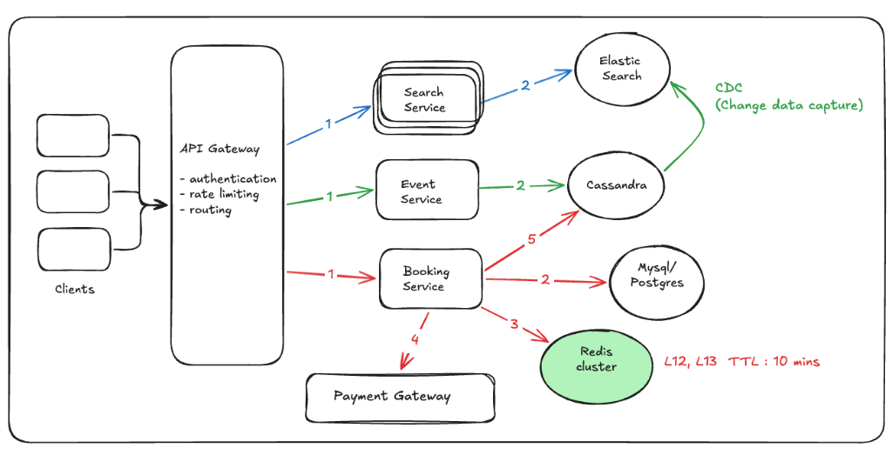

Summary
Comprehensive design for a scalable ticket booking system similar to BookMyShow or PTM. Users search for events, view details, and book tickets for movies, concerts, or shows. Covers requirements, API design, high-level and low-level design, concurrency handling, and peak traffic management.
Functional Requirements
- User should be able to search a event based on some title, location and date
- User should be able to view the details of the events (seat, description, metadata)
- User should be able to do a booking for that event
Non-Functional Requirements
- Scale: 100 million Daily Active Users (DAU)
- CAP Theorem Strategy:
- Availability: Critical for search and event browsing so users can always discover tickets.
- Consistency: Critical for the booking process to ensure no two users can book the same seat.
Based on these requirements, we decide which parts of the application prioritize availability vs. consistency:
- Search and Viewing: Should be highly available to handle massive traffic and provide a smooth browsing experience.
- Seat Selection and Booking: Must be highly consistent at the time of booking to prevent race conditions and double bookings.
Core Entities
| Entity | Description |
|---|---|
| User | End consumer booking tickets |
| Event | Movies, concerts, or shows |
| Venue | Location or hall where event takes place |
| Seat | Individual seats available for booking |
API Design
API designs are often a 1-to-1 mapping of the functional requirements. If the functional requirements are written clearly, the API design becomes straightforward and easy to implement without issues.
- 1. Search Events:
GET /v1/search?q={searchTerm}&location={location}&date={date}
Returns:List<EventId>(Paginated matches) - 2. View Event Details:
GET /v1/event/{eventId}
Returns:Event Details, Location, Seats[] - 3. Book Ticket (Two-Step Process):
- Reserve Seats:
POST /v1/booking/reserve
Body:{ "seats": List<Seat> }→ Returns:BookingID - Confirm Booking:
POST /v1/booking/confirm
Body:{ "bookingId": String, "paymentDetails": Object }
- Reserve Seats:
Note: User ID is passed in request headers for authentication.
High-Level System Design

- Architecture: Microservices for scalability
- Clients: Mobile/web users
- API Gateway: Authentication, rate limiting, routing
- Microservices:
- Search Service — Search queries
- Event Service — Event metadata retrieval
- Booking Service — Seat reservations and bookings
Low-Level Design — Data Storage

Storage Strategy
- Consistency: Whenever we need to make anything consistent in a DB (like booking and payments), blindly go for MySQL/Postgres DB.
- Availability: To store event-related data (metadata of movies, actors, etc.), we use a NoSQL database like Cassandra DB because it is highly available.
- Search Optimization: While Cassandra is write-optimized, it is not ideal for complex reads/searches. For optimized searching, we use Elastic Search.
Database Schema
Event (Cassandra)
Movie (Cassandra)
Open Question: Now the question is, how would the data from Cassandra reach Elastic Search?

Data Ingestion & Sync
Although the data for both Cassandra and Elasticsearch would be the same, we must write some ingestion jobs to move the data from Cassandra to Elasticsearch. This is because the choice of database that we have taken here, Cassandra, is not optimized for searching.
Que: Why are we even going with Cassandra Database instead of MySQL or PostgresDB?
Ans: Even if we were going with MySQL, we would have to go with partitioning or indexing on data. We might put an index on the title, but in the case of Elasticsearch, the user has the flexibility to put indexing on Title, Date, Location, etc. simultaneously.
To ingest the data, we can use an Ingestor Service or a CDC (Change Data Capture) pipeline. Whenever there is a change in the Cassandra DB, a change event will get triggered and would automatically get ingested into Elasticsearch, so that all the real-time data from Cassandra is available in Elasticsearch.
You see there are some realtime attributes present in the Cassandra DB. For example, whenever a booking is made and a seat is filled, the seats other users are viewing should no longer be shown as available. In this case, the Booking Service updates the Cassandra DB. Since Cassandra is write-optimized, it persists that change very quickly, and a CDC event is triggered to update the search index.

This is how the CDC service works: Debezium captures all granular changes into a streaming service (Kafka), and a consumer (or Kafka Connect) ingests that data into Elasticsearch for real-time searchability.
Achieving Consistency
There are different ways to achieve consistency in the booking process:
1. Cron Job Approach

One approach would be to mark a seat as reserved. If the user does not complete the payment for the booked seat within 10 minutes, the seat should be released. To implement this, we could introduce a Cron Job that scans the database every minute to find and release expired reservations.
Downside: The major drawback is that the cron job would have to scan the entire dataset every minute, which is inefficient and does not scale well for large databases. This is generally not considered a good solution for high-traffic systems.
2. Redis Cluster Approach

In this approach, whenever a new request arrives at the Booking Service, we check if the requested seats are already locked in Redis. If not, we know no other user is currently booking those seats. We then save the seat information in the Redis Cluster with a TTL (Time-To-Live) of 10 minutes.
The flow proceeds as follows:
- If seats are available, lock them in Redis (TTL: 10m).
- Call the Payment Service.
- If payment is successful:
- Remove the entry from Redis.
- Update MySQL/Postgres to finalize the booking.
- Update Cassandra metadata, triggering the CDC pipeline.
- If payment fails: The entry in Redis will automatically be deleted once the TTL expires. No cron job or manual cleanup is required.
Final Architecture

In a real-world scenario, the rate of read requests (searching and viewing events) is significantly higher than the rate of write requests (actual bookings). To handle this imbalance, we scale the Search Service horizontally with multiple instances, while the Booking Service may require fewer instances but higher consistency guarantees.
Booking Service & Concurrency Handling
Two-step booking:
- Reserve seats — Temporary lock (5–10 min)
- Confirm booking — After successful payment
Avoiding Race Conditions (Double Booking)
- Redis cluster with TTL as distributed lock for seat reservations
- Seat reserved → entry in Redis with 10-minute expiry
- Payment success → remove Redis lock, update persistent DB
- Payment fails or timeout → Redis auto-releases lock (no cron job)
- Eliminates unreliability of periodic cron jobs scanning for expired reservations
Handling Traffic Spikes
- High-demand events (e.g., concerts) → waiting queue via Kafka
- Incoming booking requests enqueued to manage load
- Sequential dequeue for orderly processing; prevents system overload
Summary: Design Decisions
| Aspect | Decision | Reasoning |
|---|---|---|
| Architecture | Microservices | Scalability for 100M users |
| Event Metadata | Cassandra (NoSQL) | High availability, write-optimized |
| Search Engine | Elasticsearch | Low-latency search |
| Booking Data | PostgreSQL/MySQL | Strong consistency |
| Booking Concurrency | Redis with TTL locks | Distributed seat reservation locking |
| API Gateway | Auth, rate limiting | Traffic and security management |
| Peak Traffic | Kafka queue | Throttling high demand |
Key Insights
- Separation of concerns in microservices enhances scalability and maintainability
- CAP trade-offs per use case: availability for search, consistency for booking
- Redis TTL for seat locks provides clean concurrency control without cron jobs
- Elasticsearch enables fast search over large event datasets
- Kafka queue for peak traffic ensures stability during high demand